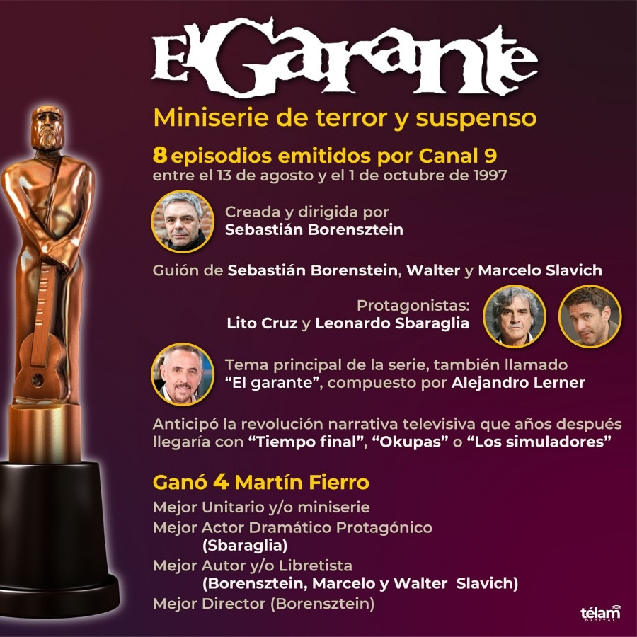

El Garante
Premios

El Garante obtuvo cuatro Premios Martín Fierro.
También fue nominada a premios internacionales, incluyendo los premios EMMY.
Además, el guionista Sebastián Borensztein fue reconocido con el Premio ARGENTORES.
Premios Martín Fierro:
- Mejor unitario y/o miniserie
- Mejor actor dramático protagónico (Leonardo Sbaraglia)
- Mejor autor y/o libretista (Sebastián Borensztein, Marcelo Slavich y Walter Slavich)
- Mejor director (Sebastián Borensztein)
Otros reconocimientos:
- Premios EMMY (finalista, mejor programa extranjero)
- Premio FUND TV a la excelencia en televisión
- Premio Broadcasting mejor producción